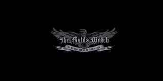
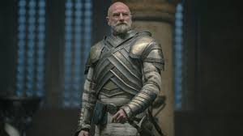
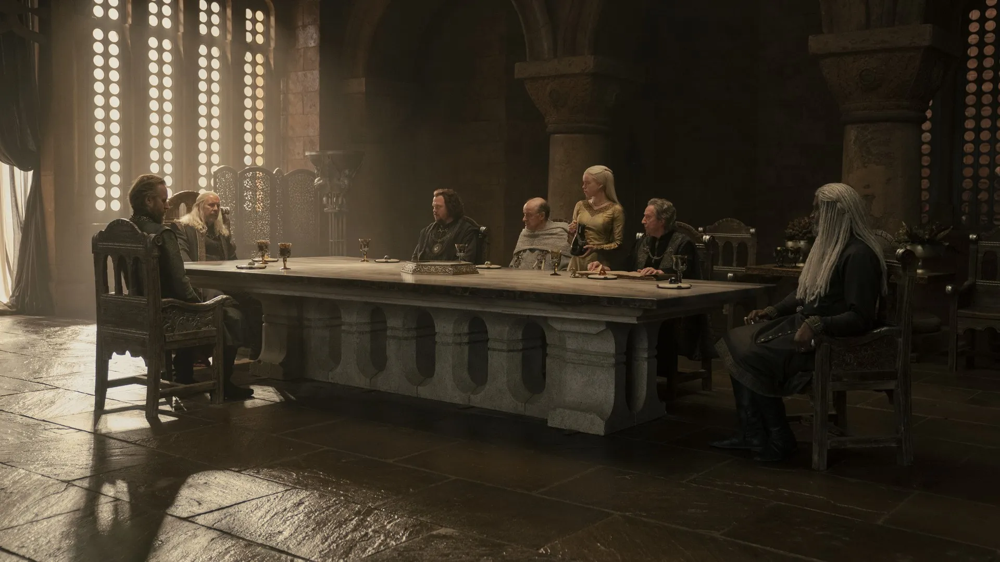
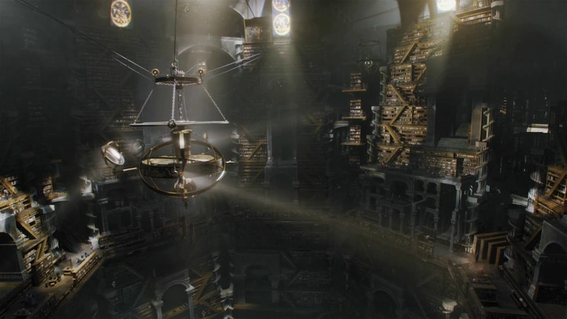
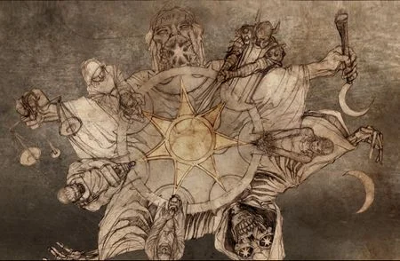
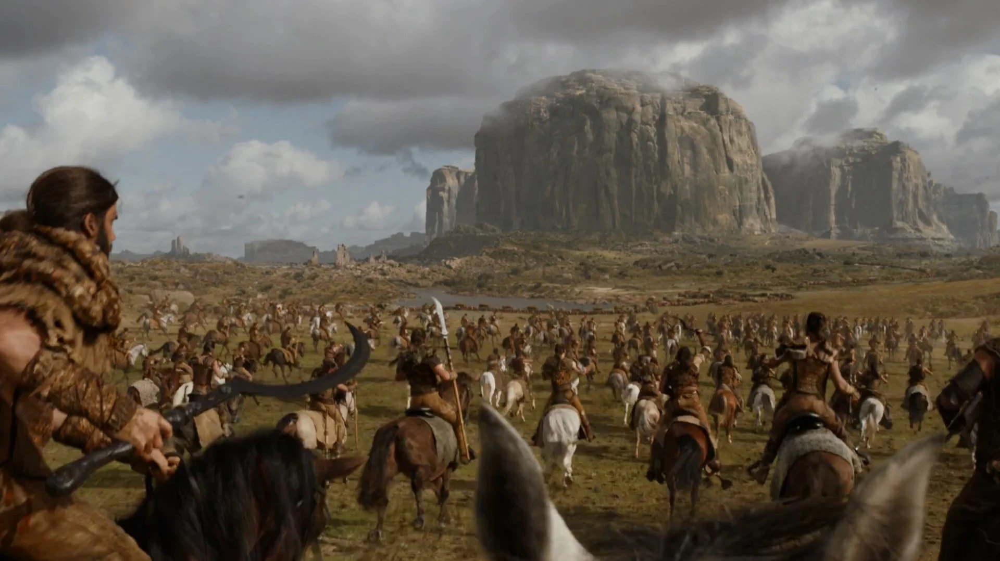
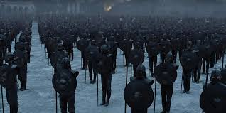
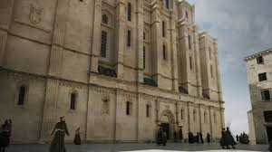
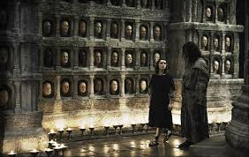
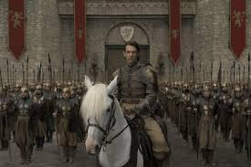

The societies of this world are driven by powerful institutions that shape politics, warfare, knowledge, and faith. The Night’s Watch stands as a grim guardian of the North, bound by oaths that transcend noble houses, while the Kingsguard represents the crown’s elite protectors. The Citadel governs learning through its maesters, influencing rulers through counsel, medicine, and recordkeeping. Religious and military groups also hold significant sway. The Faith of the Seven guides much of Westeros through tradition and law, while Essos hosts organizations like the Faceless Men, Unsullied, and the Golden Company—each with their own philosophies and formidable influence. Together, these organizations create both stability and conflict across the continents.
A sworn brotherhood protecting the Wall; vows of celibacy, loyalty, and service.

Elite white-armored knights who protect the king.

Ruling advisory council in King’s Landing; handles royal governance.

Scholarly order in Oldtown where maesters train.

Main religion of most Westerosi; includes septons, septas, and the Faith Militant.

Nomadic horse tribe led by a khal; structured around warfare and raiding.

Elite slave-soldier army trained for discipline and obedience.

The most powerful financial institution in the known world.

An ancient assassin cult from Braavos who worship the Many-Faced God.

A massive, elite sellsword army founded by exiled Westerosi.
